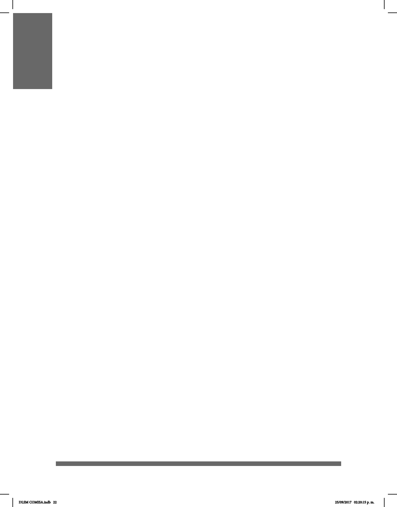

22
INTRODUCCIÓN Y AGRADECIMIENTOS
El Diccionario de Lengua de Señas Mexicana en la Ciudad de México (DLSM) puede
considerarse como el mayor logro de nuestro tiempo, en tanto a recursos de consulta,
para los miembros y usuarios de esta lengua; además signicó la unión de sordos y
oyentes para trabajar por el bien de la comunidad.
El proyecto dio inicio el 8 de marzo de 2016 en las instalaciones del Instituto de las
Personas con Discapacidad de la Ciudad de México (INDEPEDI), mismo que fue
avalado e impulsado por el Jefe de Gobierno de la CDMX, Dr. Miguel Ángel
Mancera Espinosa. Para la realización del proyecto se colaboró con la Comunidad
Sorda, con quien se planteó el contenido y desarrollo de la obra, así como el cotejo de la
lengua. Por ello, como aspecto principal, se acordó que su organización estuviera
regida por conguraciones manuales en lugar de obedecer a un orden alfabético,
tradicional en obras lexicográcas de lenguas orales. El diccionario, de
acuerdo con lo anterior, contaría con un compendio de señas amplio y
estaría acompañado de grabaciones que contuvieran las realizaciones de cada una
de las señas como material de apoyo visual, es decir, que se aprovechara tanto el
formato físico como el digital. Para su organización, las labores se dividieron en grupos
especializados de trabajo: 1) El primer grupo estuvo compuesto por personas
sordas, quienes realizarían por votación la selección de las señas; 2) Grupo de
Traducción, conformado por intérpretes de Lengua de Señas Mexicana (LSM); 3) Grupo de
Redacción Teórica Académica, el cual tuvo a destacados académicos que guiaron la
investigación y 4) Grupo de Difusión y Publicación del INDEPEDI. A esta
formación inicial se agregaron más tarde dos equipos: el de Apoyo Lexicográco y el de
Diseñadores, personas sordas y oyentes entusiastas que, desde las Universidades e
Instituciones Académicas, se sumaron a este esfuerzo.
A partir de los rasgos distintivos de la LSM se establecieron los parámetros para
unicar los criterios sobre la lengua que utilizan los usuarios nativos; los intérpretes y
los lingüistas realizaron las glosas y las descripciones de cada seña. Por otra parte, se
estableció el rol de los usuarios nativos de la lengua, quienes, además de fungir como
quórum, colaboraron tanto como asesores para el signicado de las señas, así como
modelos para las sesiones fotográcas y videograbaciones.
La elección de las señas fue la tarea principal de la comunidad de sordos señantes.
Las señas recopiladas y consensadas en la obra fueron compendiadas por sordos de
diversas regiones geográcas de la Ciudad de México y de las dieciséis Delegaciones
Políticas. Esto se hizo para evitar el predominio de las señas utilizadas en una sola
región por encima de otras que pudieran relegar otras variantes. La variación regional
en la LSM es un fenómeno natural como en toda lengua.
La colección de señas obtenida abarca diferentes campos de la vida cotidiana que
DLSM COMISA.indb 22 25/09/2017 02:20:15 p. m.